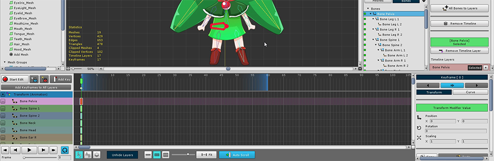
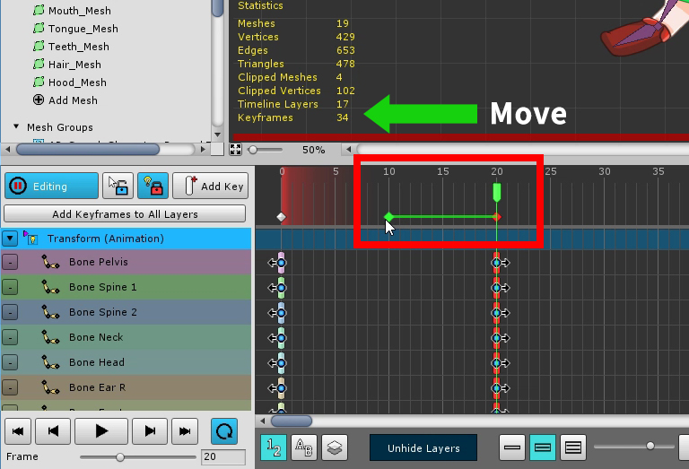
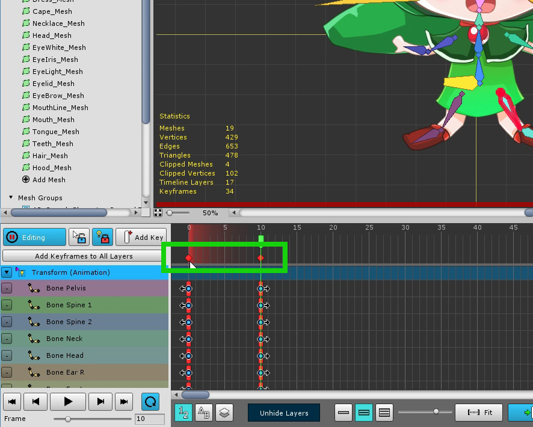
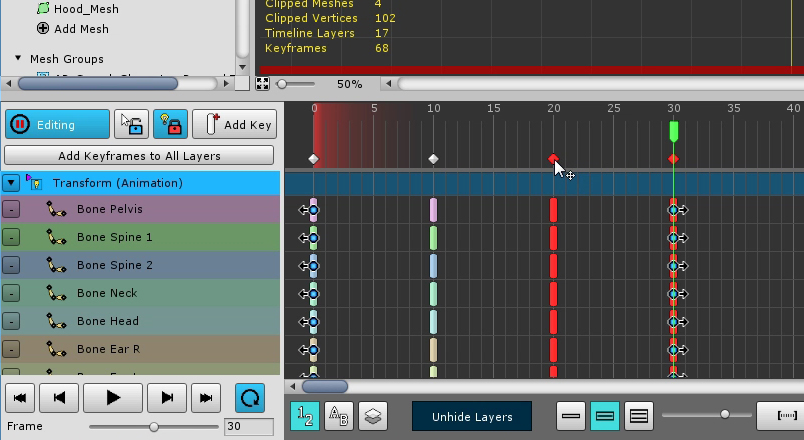
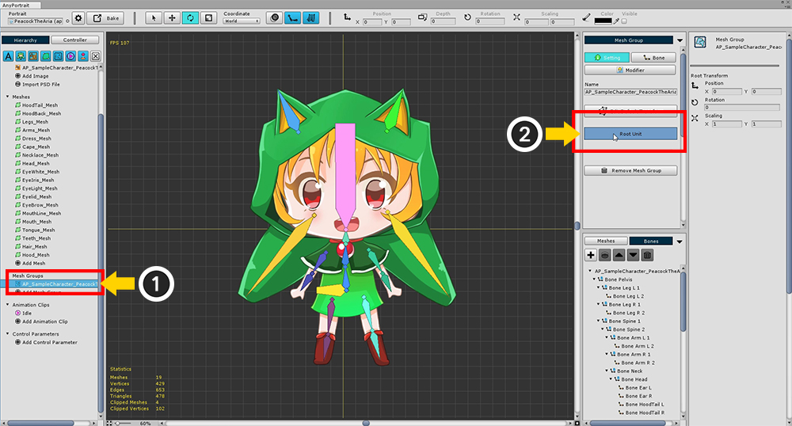
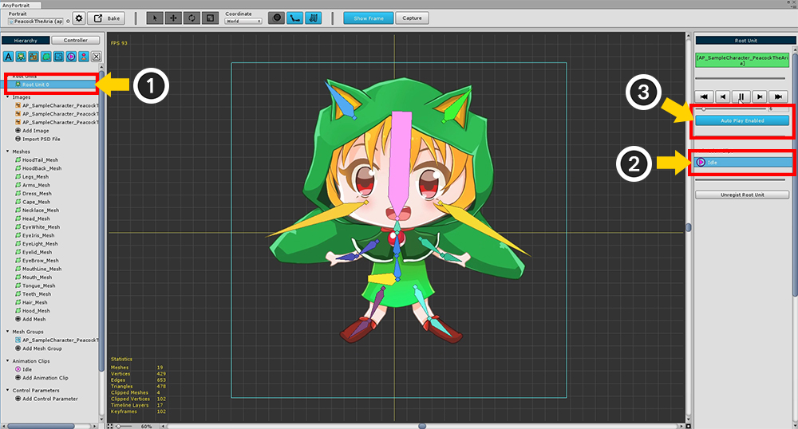

AnyPortrait > 入門ガイド > 2.9. 骨のアニメーションを作成
2.9. 骨のアニメーションを作成
1.0.0
このページでは、簡単なアニメーションを作成しましょう。
キャラクターが軽くバウンスするリピートアニメーションを作成しながら、すべてのプロセスを学びます。

新しいアニメーションクリップを作成するか、以前に作成したアニメーションキーフレームを削除します。
キーフレームを削除すると、
(1) すべてのキーフレームを選択します。
(2) 「Remove Keyframes」ボタンを押して削除します。

すべての骨を選択して、タイムラインに追加するのは面倒で時間がかかります。
(1) 「Bones」タブが選択された状態で、
(2) 「All Bones to Layers」ボタンを押して、すべての骨組みのタイムラインのレイヤーを一度に作成します。
既に追加された骨の作業をスキップします。
「Meshes」タブを選択した状態で、すべてのメッシュをタイムラインのレイヤーに追加します。

すべての骨は、タイムラインに登録されています。

ループアニメーションを作成するには、アニメーションの「Loop」をオンにします。

2つ目のフレームを作成する必要があります。複数のタイムラインレイヤーを持つ場合は面倒です。
この場合、「Add Keyframes to All Layers」機能を使用すると便利です。
(1) タイムスライダーを移動し、(2) 「Add Keyframes to All Layers」ボタンを押して、キーフレームをバッチで作成します。
(注 : キーフレームを作成するには、編集モードを有効にする必要があります。)

タイムスライダーを生成されたキーフレームの位置に移動し、編集モードをオンにします。
この状態では、キャラクターをジャンプさせるポーズを保持します。
「選択ロック」をオフにして作業すると便利です。 ( S )

キーフレームを移動するときにタイムラインレイヤーが多数あると面倒です。
タイムスライダの下にある「共通のキーフレーム」を選択すると、その場所のすべてのキーフレームを一度に選択して制御できます。
キーフレームを移動またはコピーしてアニメーションを作成します。

ポーズ1とポーズ2をもう少し繰り返してみましょう。
すべてのキーフレームを選択します。
マウスをドラッグして共通のキーフレームを選択することができます。

このステップでキーフレームをコピーします。( Shift または Ctrl （ Command ）を押しながらマウスを ドラッグ＆ドロップ する。)

繰り返すポーズ1,2のパターンがコピーされます。
このサンプルは変更されなくなりましたが、アニメートされたパターンを作成してバリエーションを加えて興味深い結果を作成することができます。

パターンをもう一度コピーして、アニメーションを完成させます。

完成したアニメーションをシーンに移動します。
(1) メッシュグループを再度選択し、(2) 「Root Unit」として登録されていることを確認します。

階層メニューで (1) 「Root Unit 0」を選択すると、完成したアニメーションが自動的に登録されます。
(2) アニメーションを選択して実行することでテストできます。
(3) 「Auto Play」ボタンを押すと、シーン内で自動的にアニメーションが再生されます。

これまで作成したキャラクターをシーンに移動するには 「Bake」を押します

シーンでゲームを実行すると、アニメーションが自動的に実行されていることがわかります。